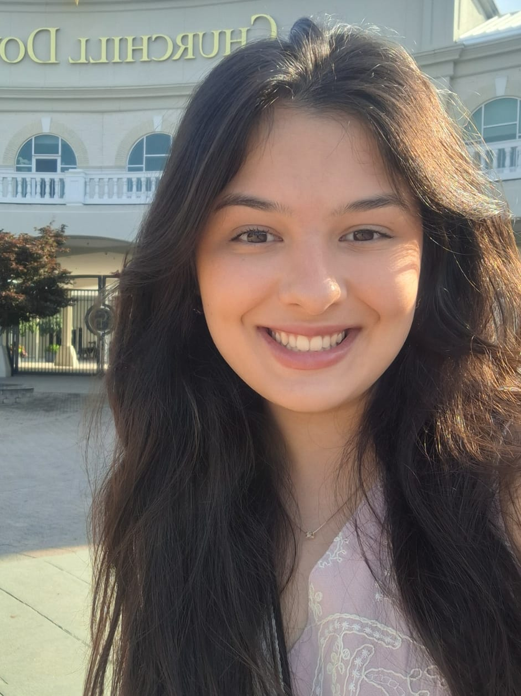

Futura Engenheira de Software com foco na aquisição de conhecimento em Lógica de Programação e desenvolvimento web.
Possuo fluência total em inglês, atestada por certificação internacional, e experiência em trabalho em equipe e gestão de conteúdo
em ambiente de voluntariado. Busco uma porta de entrada para desenvolver minhas habilidades técnicas e interpessoais
em um ambiente dinâmico de tecnologia. Amo aprender constantemente e de dormas diferentes!
Estudo Engenheira de Software na Católica, além de outros dois cursos a parte: GoStack da Rocketseat e Rackers do Bem.
Aprendizado contínuo e forte que me permita ter uma base sólida para, em breve, estar ingressando no mercado de trabalho da área.